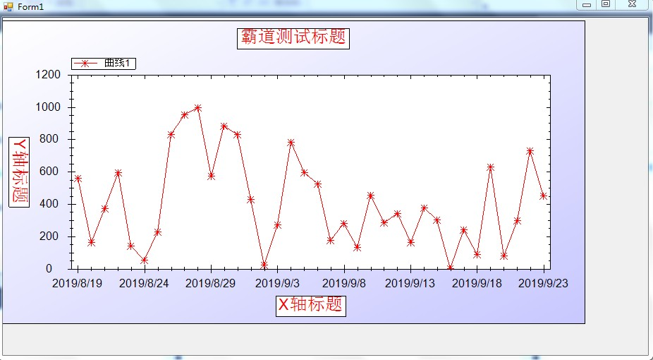
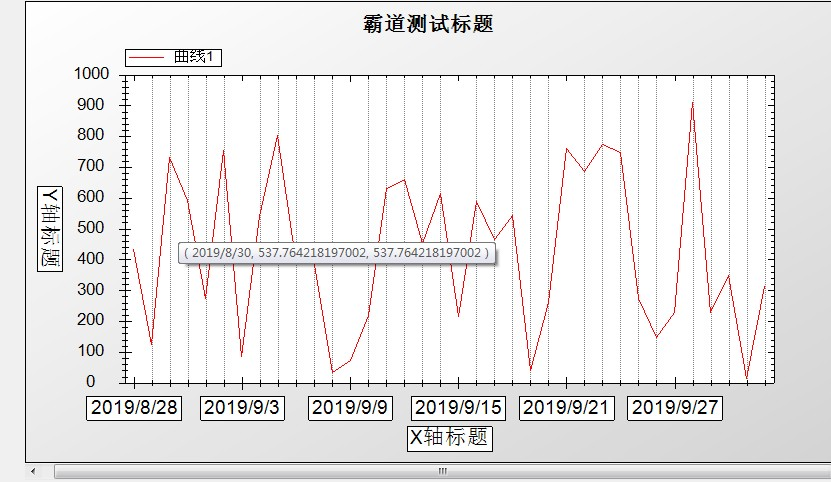

C#窗体应用中使用ZedGraph曲线插件绘制图表：
https://blog.csdn.net/BADAO_LIUMANG_QIZHI/article/details/99716066
在上面已经实现基本的曲线图之后，效果如下：

当然这不是我们的效果，还要对其属性进行设置。
但是毕竟其属性和方法说明都是英文，所以整理了一些常用属性和方法。
调整之后的效果

https://download.csdn.net/download/badao_liumang_qizhi/11578445
https://download.csdn.net/download/badao_liumang_qizhi/11578491
//是否允许横向缩放
this.zedGraphControl1.IsEnableHZoom = true;
//是否允许纵向缩放
this.zedGraphControl1.IsEnableVZoom = true;
//是否允许缩放
this.zedGraphControl1.IsEnableZoom = true;
//是否显示右键菜单
this.zedGraphControl1.IsShowContextMenu = true;
//复制图像时是否显示提示信息
this.zedGraphControl1.IsShowCopyMessage = true;
//鼠标在图表上移动时是否显示鼠标所在点对应的坐标 默认为false
this.zedGraphControl1.IsShowCursorValues = true;
//是否显示横向滚动条
this.zedGraphControl1.IsShowHScrollBar = true;
//是否显示纵向滚动条
this.zedGraphControl1.IsShowVScrollBar = true;
//鼠标经过图表上的点时是否显示该点所对应的值 默认为false
this.zedGraphControl1.IsShowPointValues = true;
//使用滚轮时以鼠标所在点为中心进行缩放还是以图形中心进行缩放
//this.zedGraphControl1.IsZoomOnMouseCenter = true;
//X轴类型
myPane.XAxis.Type = AxisType.Text;
//显示小刻度 是false则看不到效果
myPane.XAxis.MinorGrid.IsVisible = true;
//线的颜色
myPane.XAxis.Color = Color.Black;
//点线中点与点之间的间隔
myPane.XAxis.MinorGrid.DashOff = 1f;
//点线中点的长度
myPane.XAxis.MinorGrid.DashOn = 1f;
//画笔宽度
myPane.XAxis.MinorGrid.PenWidth = 1f;
//X轴文本取值
myPane.XAxis.Scale.TextLabels = labels;
//第一个刻度从哪里开始
myPane.XAxis.Scale.BaseTic = 1;
//刻度值的字体属性
myPane.XAxis.Scale.FontSpec = myFont;
//填充图表颜色
myPane.Fill = new Fill(Color.White, Color.LightGray, 45.0f);
// 用list1生产一条曲线，标注是“曲线1”
//SymbolType，枚举代表曲线的样式
//Square = 0,
//Diamond = 1,
//Triangle = 2,
//Circle = 3,
//XCross = 4,
//Plus = 5,
//Star = 6,
//TriangleDown = 7,
//HDash = 8,
//VDash = 9,
//UserDefined = 10,
//Default = 11,
//None = 12,
LineItem myCurve = myPane.AddCurve("曲线1", list1, Color.Red, SymbolType.None);
//设置图表标题 和 x y 轴标题
myPane.Title.Text = "霸道测试标题";
myPane.XAxis.Title.Text = "X轴标题";
myPane.YAxis.Title.Text = "Y轴标题";
//更改标题的字体
FontSpec myFont = new FontSpec("Arial",16,Color.Black,false,false,false);
myPane.XAxis.Title.FontSpec = myFont;
myPane.YAxis.Title.FontSpec = myFont;